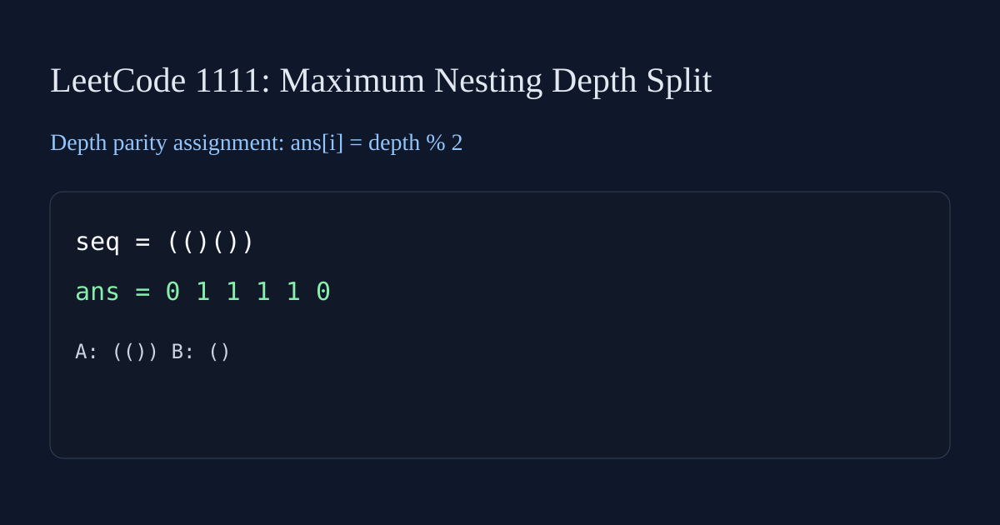

LeetCode 1111: Maximum Nesting Depth of Two Valid Parentheses Strings (Greedy by Depth Parity)

English
Assign each parenthesis to A or B so both subsequences are valid and maximum depth is minimized. Use depth parity: for '(', assign by current depth parity then increase depth; for ')', decrease depth first then assign by new depth parity.
class Solution { public int[] maxDepthAfterSplit(String seq) { int[] ans = new int[seq.length()]; int depth = 0; for (int i = 0; i < seq.length(); i++) { char c = seq.charAt(i); if (c == '(') { ans[i] = depth & 1; depth++; } else { depth--; ans[i] = depth & 1; } } return ans; } }func maxDepthAfterSplit(seq string) []int { ans := make([]int, len(seq)); depth := 0; for i, c := range seq { if c == '(' { ans[i] = depth & 1; depth++ } else { depth--; ans[i] = depth & 1 } } return ans }class Solution { public: vector maxDepthAfterSplit(string seq) { vector ans(seq.size()); int depth = 0; for (int i = 0; i < (int)seq.size(); ++i) { if (seq[i] == '(') { ans[i] = depth & 1; depth++; } else { depth--; ans[i] = depth & 1; } } return ans; } }; class Solution: def maxDepthAfterSplit(self, seq: str) -> List[int]: ans = [0] * len(seq); depth = 0; for i, ch in enumerate(seq): if ch == '(': ans[i] = depth & 1; depth += 1; else: depth -= 1; ans[i] = depth & 1; return ansvar maxDepthAfterSplit = function(seq) { const ans = Array(seq.length).fill(0); let depth = 0; for (let i = 0; i < seq.length; i++) { if (seq[i] === '(') { ans[i] = depth & 1; depth++; } else { depth--; ans[i] = depth & 1; } } return ans; };中文
把每个括号分到 A 或 B，两组都要是合法括号串，并且最大嵌套深度尽量小。按深度奇偶分配即可：遇到左括号时先按当前 depth 奇偶赋值再 depth++；遇到右括号时先 depth-- 再按新的 depth 奇偶赋值。
class Solution { public int[] maxDepthAfterSplit(String seq) { int[] ans = new int[seq.length()]; int depth = 0; for (int i = 0; i < seq.length(); i++) { char c = seq.charAt(i); if (c == '(') { ans[i] = depth & 1; depth++; } else { depth--; ans[i] = depth & 1; } } return ans; } }func maxDepthAfterSplit(seq string) []int { ans := make([]int, len(seq)); depth := 0; for i, c := range seq { if c == '(' { ans[i] = depth & 1; depth++ } else { depth--; ans[i] = depth & 1 } } return ans }class Solution { public: vector maxDepthAfterSplit(string seq) { vector ans(seq.size()); int depth = 0; for (int i = 0; i < (int)seq.size(); ++i) { if (seq[i] == '(') { ans[i] = depth & 1; depth++; } else { depth--; ans[i] = depth & 1; } } return ans; } }; class Solution: def maxDepthAfterSplit(self, seq: str) -> List[int]: ans = [0] * len(seq); depth = 0; for i, ch in enumerate(seq): if ch == '(': ans[i] = depth & 1; depth += 1; else: depth -= 1; ans[i] = depth & 1; return ansvar maxDepthAfterSplit = function(seq) { const ans = Array(seq.length).fill(0); let depth = 0; for (let i = 0; i < seq.length; i++) { if (seq[i] === '(') { ans[i] = depth & 1; depth++; } else { depth--; ans[i] = depth & 1; } } return ans; };